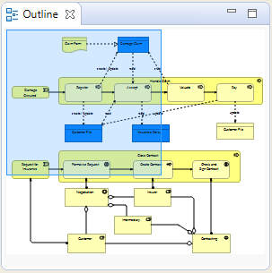

La fenêtre vue d'ensemble agit comme une vue miniature de la vue de diagramme sélectionnée de façon à faciliter la navigation si le diagramme est trop grand pour tenir dans la fenêtre.
Pour ouvrir ou fermer la fenêtre de la vue d'ensemble, choisissez l'option depuis le menu principal "Fenêtre" ou depuis la barre d'outils principale.
Si la vue qui est actuellement modifée est trop grande pour tenir dans la fenêtre de l'application, alors le paneau de navigation va apparaître dans la fenêtre d'aperçu. Tirer-glisser ce panneau de navigation fera défiler les éléments dans la vue dans le canevas de dessin.
La fentre d'aperçu